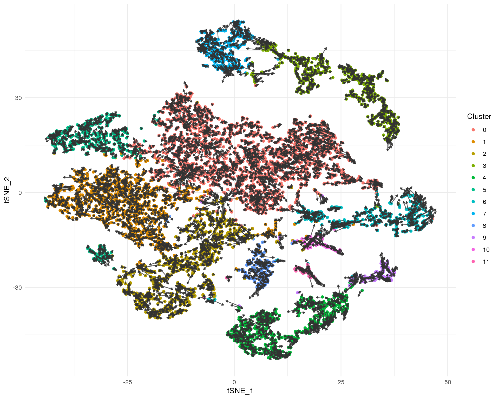
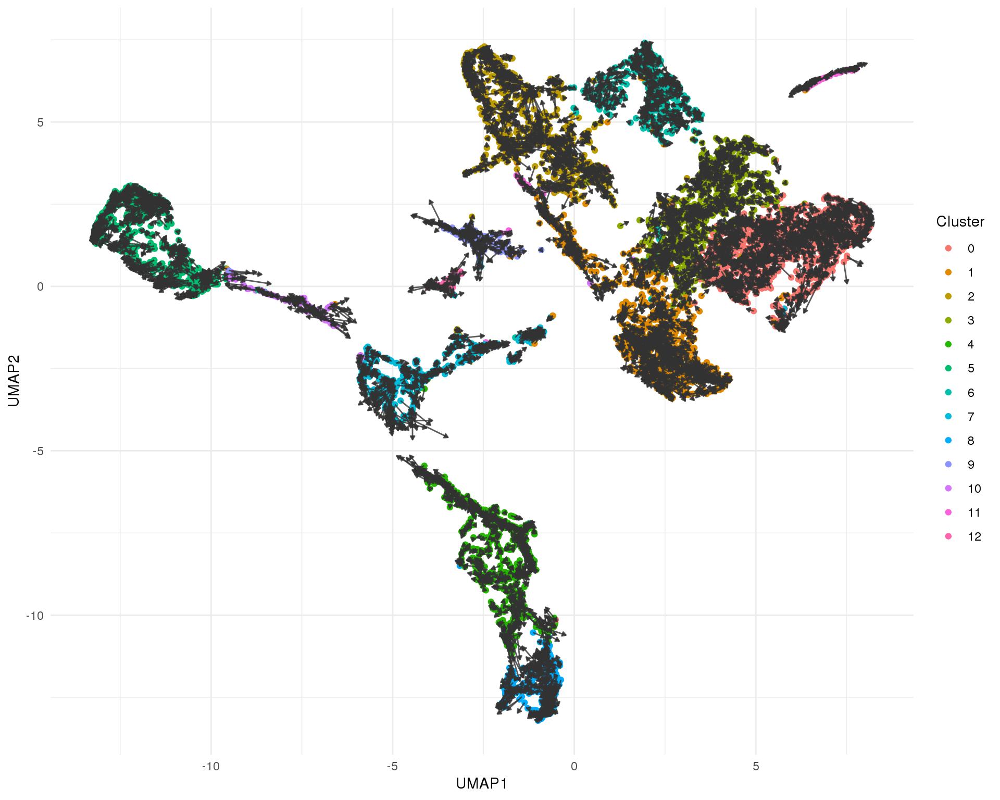
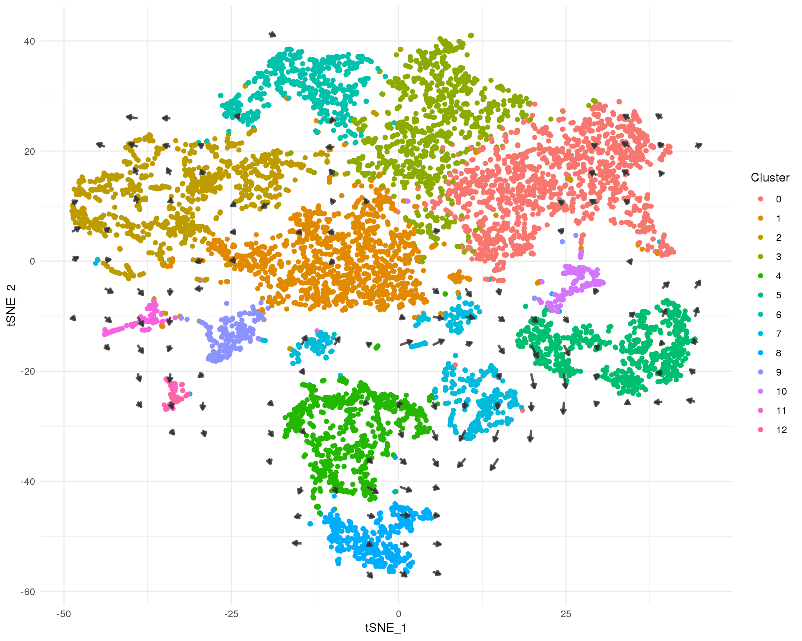
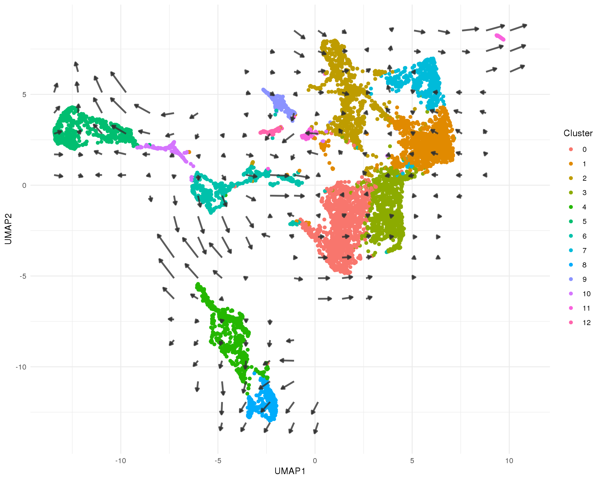

Velocyto
Last updated: 2019-02-28
workflowr checks: (Click a bullet for more information)-
✔ R Markdown file: up-to-date
Great! Since the R Markdown file has been committed to the Git repository, you know the exact version of the code that produced these results.
-
✔ Environment: empty
Great job! The global environment was empty. Objects defined in the global environment can affect the analysis in your R Markdown file in unknown ways. For reproduciblity it’s best to always run the code in an empty environment.
-
✔ Seed:
set.seed(20190110)The command
set.seed(20190110)was run prior to running the code in the R Markdown file. Setting a seed ensures that any results that rely on randomness, e.g. subsampling or permutations, are reproducible. -
✔ Session information: recorded
Great job! Recording the operating system, R version, and package versions is critical for reproducibility.
-
Great! You are using Git for version control. Tracking code development and connecting the code version to the results is critical for reproducibility. The version displayed above was the version of the Git repository at the time these results were generated.✔ Repository version: 8948f08
Note that you need to be careful to ensure that all relevant files for the analysis have been committed to Git prior to generating the results (you can usewflow_publishorwflow_git_commit). workflowr only checks the R Markdown file, but you know if there are other scripts or data files that it depends on. Below is the status of the Git repository when the results were generated:
Note that any generated files, e.g. HTML, png, CSS, etc., are not included in this status report because it is ok for generated content to have uncommitted changes.Ignored files: Ignored: .DS_Store Ignored: .Rhistory Ignored: .Rproj.user/ Ignored: ._.DS_Store Ignored: analysis/cache/ Ignored: build-logs/ Ignored: data/ Ignored: output/.DS_Store Ignored: output/._.DS_Store Ignored: output/03-clustering/selected_genes.csv.zip Ignored: output/04-marker-genes/de_genes.csv.zip Ignored: packrat/.DS_Store Ignored: packrat/._.DS_Store Ignored: packrat/lib-R/ Ignored: packrat/lib-ext/ Ignored: packrat/lib/ Ignored: packrat/src/ Untracked files: Untracked: output/06-velocyto/ Untracked: workflowr-build.e2538443 Untracked: workflowr-build.e2545370 Untracked: workflowr-build.o2538443 Untracked: workflowr-build.o2545370 Unstaged changes: Modified: scripts/build.pbs
Expand here to see past versions:
# scRNA-seq
library("SingleCellExperiment")
library("velocyto.R")
# Plotting
library("cowplot")
# Tidyverse
library("tidyverse")source(here::here("R/output.R"))clust_path <- here::here("data/processed/03-clustered.Rds")
loom1_path <- here::here("data/velocyto/Org1.loom")
loom2_path <- here::here("data/velocyto/Org2.loom")
loom3_path <- here::here("data/velocyto/Org3.loom")
loom_paths <- c(loom1_path, loom2_path, loom3_path)Introduction
In this document we are to perform cell velocity analysis using velocyto. This approach look at the number of spliced and unspliced reads from each gene and attempts to identify which are being actively transcribed and therefore the direction each cell is differentiating towards.
if (file.exists(clust_path)) {
sce <- read_rds(clust_path)
} else {
stop("Clustered dataset is missing. ",
"Please run '03-clustering.Rmd' first.",
call. = FALSE)
}
warning("New clustered dataset loaded, check Loom files are up to date!")The first step in using velocyto is to process the aligned BAM files to separately count spliced and unspliced reads. This is done using a command line program and can take a relatively long time so here we start by reading in those results.
org1 <- read.loom.matrices(loom1_path)
org2 <- read.loom.matrices(loom2_path)
org3 <- read.loom.matrices(loom3_path)
spliced <- cbind(org1$spliced, org2$spliced, org3$spliced)
unspliced <- cbind(org1$unspliced, org2$unspliced, org3$unspliced)
cell_idx <- colData(sce)$Cell
names(cell_idx) <- paste0(
"Org", colData(sce)$Sample, ":", colData(sce)$Barcode, "x"
)
colnames(spliced) <- unname(cell_idx[colnames(spliced)])
spliced <- spliced[intersect(rownames(sce), rownames(spliced)), colnames(sce)]
colnames(unspliced) <- unname(cell_idx[colnames(unspliced)])
unspliced <- unspliced[intersect(rownames(sce), rownames(unspliced)),
colnames(sce)]Velocyto
We now run velocyto to calclate velocities for each cell. We also project these results onto our previous dimensionality reductions for visualisation.
spliced <- filter.genes.by.cluster.expression(
spliced, colData(sce)$Cluster,
min.max.cluster.average = 0.2
)
unspliced <- filter.genes.by.cluster.expression(
unspliced, colData(sce)$Cluster,
min.max.cluster.average = 0.05
)
velocity <- gene.relative.velocity.estimates(
spliced, unspliced,
deltaT = 1,
kCells = 30,
fit.quantile = 0.02,
n.cores = 10
)
tSNE_embedding <- show.velocity.on.embedding.cor(
reducedDim(sce, "SeuratTSNE"), velocity,
n.cores = 10, show.grid.flow = TRUE, return.details = TRUE
)umap_embedding <- show.velocity.on.embedding.cor(
reducedDim(sce, "SeuratUMAP"), velocity,
n.cores = 10, show.grid.flow = TRUE, return.details = TRUE
)By cell
This plot shows the velocity of individual cells. The direction of each arrow indicates where each cell is headed in this space based on the genes that are being actively transcribed and the length is an indication of rate.
t-SNE
tSNE_data <- reducedDim(sce, "SeuratTSNE") %>%
as.data.frame() %>%
mutate(X0 = tSNE_embedding$arrows[, "x0"],
X1 = tSNE_embedding$arrows[, "x1"],
Y0 = tSNE_embedding$arrows[, "y0"],
Y1 = tSNE_embedding$arrows[, "y1"]) %>%
mutate(X2 = X0 + (X1 - X0) * 4,
Y2 = Y0 + (Y1 - Y0) * 4) %>%
mutate(Cluster = colData(sce)$Cluster)
ggplot(tSNE_data) +
geom_point(aes(x = tSNE_1, y = tSNE_2, colour = Cluster)) +
geom_segment(aes(x = X0, xend = X2, y = Y0, yend = Y2),
arrow = arrow(length = unit(3, "points"), type = "closed"),
colour = "grey20", alpha = 0.8) +
theme_minimal()
Expand here to see past versions of velo-tsne-1.png:
| Version | Author | Date |
|---|---|---|
| 34eb216 | Luke Zappia | 2019-02-12 |
UMAP
umap_data <- reducedDim(sce, "SeuratUMAP") %>%
as.data.frame() %>%
setNames(c("UMAP1", "UMAP2")) %>%
mutate(X0 = umap_embedding$arrows[, "x0"],
X1 = umap_embedding$arrows[, "x1"],
Y0 = umap_embedding$arrows[, "y0"],
Y1 = umap_embedding$arrows[, "y1"]) %>%
mutate(X2 = X0 + (X1 - X0) * 1,
Y2 = Y0 + (Y1 - Y0) * 1) %>%
mutate(Cluster = colData(sce)$Cluster)
ggplot(umap_data) +
geom_point(aes(x = UMAP1, y = UMAP2, colour = Cluster)) +
geom_segment(aes(x = X0, xend = X2, y = Y0, yend = Y2),
arrow = arrow(length = unit(3, "points"), type = "closed"),
colour = "grey20", alpha = 0.8) +
theme_minimal()
Vector field
It can be hard to see all the arrows for individual cells and noise in the data can make similar cells appear to be heading in different directions. Here we summarise the data by building a grid field of vectors that show the average velocity of nearby cells. This gives us a global view of the transcriptional direction of of the dataset.
t-SNE
tSNE_arrows <- tSNE_embedding$garrows %>%
as.data.frame() %>%
mutate(x2 = x0 + (x1 - x0) * 10,
y2 = y0 + (y1 - y0) * 10)
ggplot(tSNE_data) +
geom_point(aes(x = tSNE_1, y = tSNE_2, colour = Cluster)) +
geom_segment(data = tSNE_arrows,
aes(x = x0, xend = x2, y = y0, yend = y2),
size = 1,
arrow = arrow(length = unit(4, "points"), type = "closed"),
colour = "grey20", alpha = 0.8) +
theme_minimal()
Expand here to see past versions of velo-tsne-field-1.png:
| Version | Author | Date |
|---|---|---|
| 34eb216 | Luke Zappia | 2019-02-12 |
UMAP
umap_arrows <- umap_embedding$garrows %>%
as.data.frame() %>%
mutate(x2 = x0 + (x1 - x0) * 5,
y2 = y0 + (y1 - y0) * 5)
ggplot(umap_data) +
geom_point(aes(x = UMAP1, y = UMAP2, colour = Cluster)) +
geom_segment(data = umap_arrows,
aes(x = x0, xend = x2, y = y0, yend = y2),
size = 1,
arrow = arrow(length = unit(4, "points"), type = "closed"),
colour = "grey20", alpha = 0.8) +
theme_minimal()
Figures
label_data <- umap_data %>%
group_by(Cluster) %>%
summarise(UMAP1 = mean(UMAP1),
UMAP2 = mean(UMAP2))
cell_plot <- ggplot(umap_data) +
geom_point(aes(x = UMAP1, y = UMAP2, colour = Cluster), alpha = 0.3) +
geom_segment(aes(x = X0, xend = X2, y = Y0, yend = Y2),
arrow = arrow(length = unit(3, "points"), type = "closed"),
colour = "grey20", alpha = 0.3) +
geom_point(data = label_data, aes(x = UMAP1, y = UMAP2, colour = Cluster),
shape = 21, size = 6, stroke = 1, fill = "white") +
geom_text(data = label_data,
aes(x = UMAP1, y = UMAP2, colour = Cluster, label = Cluster)) +
ggtitle("Individual cell velocity estimates") +
theme_minimal() +
theme(legend.position = "none")
field_plot <- ggplot(umap_data) +
geom_point(aes(x = UMAP1, y = UMAP2, colour = Cluster), alpha = 0.3) +
geom_segment(data = umap_arrows,
aes(x = x0, xend = x2, y = y0, yend = y2),
arrow = arrow(length = unit(4, "points"), type = "closed"),
size = 1, colour = "grey20", alpha = 0.6) +
geom_point(data = label_data, aes(x = UMAP1, y = UMAP2, colour = Cluster),
shape = 21, size = 6, stroke = 1, fill = "white") +
geom_text(data = label_data,
aes(x = UMAP1, y = UMAP2, colour = Cluster, label = Cluster)) +
ggtitle("Cell velocity field") +
theme_minimal() +
theme(legend.position = "none")
fig <- plot_grid(cell_plot, field_plot, nrow = 1, labels = "AUTO")
ggsave(here::here("output", DOCNAME, "cell-velocity.pdf"), fig,
width = 7, height = 4, scale = 2)
ggsave(here::here("output", DOCNAME, "cell-velocity.png"), fig,
width = 7, height = 4, scale = 2)
fig
Summary
Parameters
This table describes parameters used and set in this document.
params <- list(
)
names(params) <- map_chr(params, magrittr::extract2, "Parameter")
metadata(sce)$Params[[DOCNAME]] <- params
names(params) <- NULL
params <- jsonlite::toJSON(params, pretty = TRUE)
knitr::kable(jsonlite::fromJSON(params))Output files
This table describes the output files produced by this document. Right click and Save Link As… to download the results.
dir.create(here::here("output", DOCNAME), showWarnings = FALSE)
knitr::kable(data.frame(
File = c(
getDownloadLink("parameters.json", DOCNAME),
getDownloadLink("cell-velocity.png", DOCNAME),
getDownloadLink("cell-velocity.pdf", DOCNAME)
),
Description = c(
"Parameters set and used in this analysis",
"Cell velocity figure (PNG)",
"Cell velocity figure (PDF)"
)
))| File | Description |
|---|---|
| parameters.json | Parameters set and used in this analysis |
| cell-velocity.png | Cell velocity figure (PNG) |
| cell-velocity.pdf | Cell velocity figure (PDF) |
{kind=link}
Session information
devtools::session_info()─ Session info ──────────────────────────────────────────────────────────
setting value
version R version 3.5.0 (2018-04-23)
os CentOS release 6.7 (Final)
system x86_64, linux-gnu
ui X11
language (EN)
collate en_US.UTF-8
ctype en_US.UTF-8
tz Australia/Melbourne
date 2019-02-28
─ Packages ──────────────────────────────────────────────────────────────
! package * version date lib
assertthat 0.2.0 2017-04-11 [1]
backports 1.1.3 2018-12-14 [1]
bindr 0.1.1 2018-03-13 [1]
bindrcpp * 0.2.2 2018-03-29 [1]
Biobase * 2.42.0 2018-10-30 [1]
BiocGenerics * 0.28.0 2018-10-30 [1]
BiocParallel * 1.16.5 2019-01-04 [1]
bitops 1.0-6 2013-08-17 [1]
broom 0.5.1 2018-12-05 [1]
callr 3.1.1 2018-12-21 [1]
cellranger 1.1.0 2016-07-27 [1]
cli 1.0.1 2018-09-25 [1]
P cluster 2.0.7-1 2018-04-13 [5]
P codetools 0.2-15 2016-10-05 [5]
colorspace 1.4-0 2019-01-13 [1]
cowplot * 0.9.4 2019-01-08 [1]
crayon 1.3.4 2017-09-16 [1]
DelayedArray * 0.8.0 2018-10-30 [1]
desc 1.2.0 2018-05-01 [1]
devtools 2.0.1 2018-10-26 [1]
digest 0.6.18 2018-10-10 [1]
dplyr * 0.7.8 2018-11-10 [1]
evaluate 0.12 2018-10-09 [1]
forcats * 0.3.0 2018-02-19 [1]
fs 1.2.6 2018-08-23 [1]
generics 0.0.2 2018-11-29 [1]
GenomeInfoDb * 1.18.1 2018-11-12 [1]
GenomeInfoDbData 1.2.0 2019-01-15 [1]
GenomicRanges * 1.34.0 2018-10-30 [1]
ggplot2 * 3.1.0 2018-10-25 [1]
git2r 0.24.0 2019-01-07 [1]
glue 1.3.0 2018-07-17 [1]
gtable 0.2.0 2016-02-26 [1]
haven 2.0.0 2018-11-22 [1]
here 0.1 2017-05-28 [1]
highr 0.7 2018-06-09 [1]
hms 0.4.2 2018-03-10 [1]
htmltools 0.3.6 2017-04-28 [1]
httr 1.4.0 2018-12-11 [1]
IRanges * 2.16.0 2018-10-30 [1]
jsonlite 1.6 2018-12-07 [1]
knitr 1.21 2018-12-10 [1]
P lattice 0.20-35 2017-03-25 [5]
lazyeval 0.2.1 2017-10-29 [1]
lubridate 1.7.4 2018-04-11 [1]
magrittr 1.5 2014-11-22 [1]
P MASS 7.3-50 2018-04-30 [5]
P Matrix * 1.2-14 2018-04-09 [5]
matrixStats * 0.54.0 2018-07-23 [1]
memoise 1.1.0 2017-04-21 [1]
P mgcv 1.8-24 2018-06-18 [5]
modelr 0.1.3 2019-02-05 [1]
munsell 0.5.0 2018-06-12 [1]
P nlme 3.1-137 2018-04-07 [5]
pcaMethods 1.74.0 2018-10-30 [1]
pillar 1.3.1 2018-12-15 [1]
pkgbuild 1.0.2 2018-10-16 [1]
pkgconfig 2.0.2 2018-08-16 [1]
pkgload 1.0.2 2018-10-29 [1]
plyr 1.8.4 2016-06-08 [1]
prettyunits 1.0.2 2015-07-13 [1]
processx 3.2.1 2018-12-05 [1]
ps 1.3.0 2018-12-21 [1]
purrr * 0.3.0 2019-01-27 [1]
R.methodsS3 1.7.1 2016-02-16 [1]
R.oo 1.22.0 2018-04-22 [1]
R.utils 2.7.0 2018-08-27 [1]
R6 2.3.0 2018-10-04 [1]
Rcpp 1.0.0 2018-11-07 [1]
RCurl 1.95-4.11 2018-07-15 [1]
readr * 1.3.1 2018-12-21 [1]
readxl 1.2.0 2018-12-19 [1]
remotes 2.0.2 2018-10-30 [1]
rlang 0.3.1 2019-01-08 [1]
rmarkdown 1.11 2018-12-08 [1]
rprojroot 1.3-2 2018-01-03 [1]
rstudioapi 0.9.0 2019-01-09 [1]
rvest 0.3.2 2016-06-17 [1]
S4Vectors * 0.20.1 2018-11-09 [1]
scales 1.0.0 2018-08-09 [1]
sessioninfo 1.1.1 2018-11-05 [1]
SingleCellExperiment * 1.4.1 2019-01-04 [1]
stringi 1.2.4 2018-07-20 [1]
stringr * 1.3.1 2018-05-10 [1]
SummarizedExperiment * 1.12.0 2018-10-30 [1]
testthat 2.0.0 2017-12-13 [5]
tibble * 2.0.1 2019-01-12 [1]
tidyr * 0.8.2 2018-10-28 [1]
tidyselect 0.2.5 2018-10-11 [1]
tidyverse * 1.2.1 2017-11-14 [1]
usethis 1.4.0 2018-08-14 [1]
velocyto.R * 0.6 2019-02-10 [1]
whisker 0.3-2 2013-04-28 [1]
withr 2.1.2 2018-03-15 [1]
workflowr 1.1.1 2018-07-06 [1]
xfun 0.4 2018-10-23 [1]
xml2 1.2.0 2018-01-24 [1]
XVector 0.22.0 2018-10-30 [1]
yaml 2.2.0 2018-07-25 [1]
zlibbioc 1.28.0 2018-10-30 [1]
source
CRAN (R 3.5.0)
CRAN (R 3.5.0)
CRAN (R 3.5.0)
CRAN (R 3.5.0)
Bioconductor
Bioconductor
Bioconductor
CRAN (R 3.5.0)
CRAN (R 3.5.0)
CRAN (R 3.5.0)
CRAN (R 3.5.0)
CRAN (R 3.5.0)
CRAN (R 3.5.0)
CRAN (R 3.5.0)
CRAN (R 3.5.0)
CRAN (R 3.5.0)
CRAN (R 3.5.0)
Bioconductor
CRAN (R 3.5.0)
CRAN (R 3.5.0)
CRAN (R 3.5.0)
CRAN (R 3.5.0)
CRAN (R 3.5.0)
CRAN (R 3.5.0)
CRAN (R 3.5.0)
CRAN (R 3.5.0)
Bioconductor
Bioconductor
Bioconductor
CRAN (R 3.5.0)
CRAN (R 3.5.0)
CRAN (R 3.5.0)
CRAN (R 3.5.0)
CRAN (R 3.5.0)
CRAN (R 3.5.0)
CRAN (R 3.5.0)
CRAN (R 3.5.0)
CRAN (R 3.5.0)
CRAN (R 3.5.0)
Bioconductor
CRAN (R 3.5.0)
CRAN (R 3.5.0)
CRAN (R 3.5.0)
CRAN (R 3.5.0)
CRAN (R 3.5.0)
CRAN (R 3.5.0)
CRAN (R 3.5.0)
CRAN (R 3.5.0)
CRAN (R 3.5.0)
CRAN (R 3.5.0)
CRAN (R 3.5.0)
CRAN (R 3.5.0)
CRAN (R 3.5.0)
CRAN (R 3.5.0)
Bioconductor
CRAN (R 3.5.0)
CRAN (R 3.5.0)
CRAN (R 3.5.0)
CRAN (R 3.5.0)
CRAN (R 3.5.0)
CRAN (R 3.5.0)
CRAN (R 3.5.0)
CRAN (R 3.5.0)
CRAN (R 3.5.0)
CRAN (R 3.5.0)
CRAN (R 3.5.0)
CRAN (R 3.5.0)
CRAN (R 3.5.0)
CRAN (R 3.5.0)
CRAN (R 3.5.0)
CRAN (R 3.5.0)
CRAN (R 3.5.0)
CRAN (R 3.5.0)
CRAN (R 3.5.0)
CRAN (R 3.5.0)
CRAN (R 3.5.0)
CRAN (R 3.5.0)
CRAN (R 3.5.0)
Bioconductor
CRAN (R 3.5.0)
CRAN (R 3.5.0)
Bioconductor
CRAN (R 3.5.0)
CRAN (R 3.5.0)
Bioconductor
CRAN (R 3.5.0)
CRAN (R 3.5.0)
CRAN (R 3.5.0)
CRAN (R 3.5.0)
CRAN (R 3.5.0)
CRAN (R 3.5.0)
Github (velocyto-team/velocyto.R@666e1db)
CRAN (R 3.5.0)
CRAN (R 3.5.0)
CRAN (R 3.5.0)
CRAN (R 3.5.0)
CRAN (R 3.5.0)
Bioconductor
CRAN (R 3.5.0)
Bioconductor
[1] /group/bioi1/luke/analysis/phd-thesis-analysis/packrat/lib/x86_64-pc-linux-gnu/3.5.0
[2] /group/bioi1/luke/analysis/phd-thesis-analysis/packrat/lib-ext/x86_64-pc-linux-gnu/3.5.0
[3] /group/bioi1/luke/analysis/phd-thesis-analysis/packrat/lib-R/x86_64-pc-linux-gnu/3.5.0
[4] /home/luke.zappia/R/x86_64-pc-linux-gnu-library/3.5
[5] /usr/local/installed/R/3.5.0/lib64/R/library
P ── Loaded and on-disk path mismatch.This reproducible R Markdown analysis was created with workflowr 1.1.1